Research workflow · v2.0 · 2026-10-19
中国红外相机兽类群落研究工作流
Detection, completeness, community structure and protection effectiveness of ground-dwelling mammals from China's camera-trap literature
本研究把中国已发表的红外相机文献整理成一个标准化的证据库，依次回答：调查投到了哪里，物种需要多少努力才能拍到，已有清查拍全了没有，期望的物种还剩多少，群落由谁主导，以及人类压力和保护地如何影响这些结果。
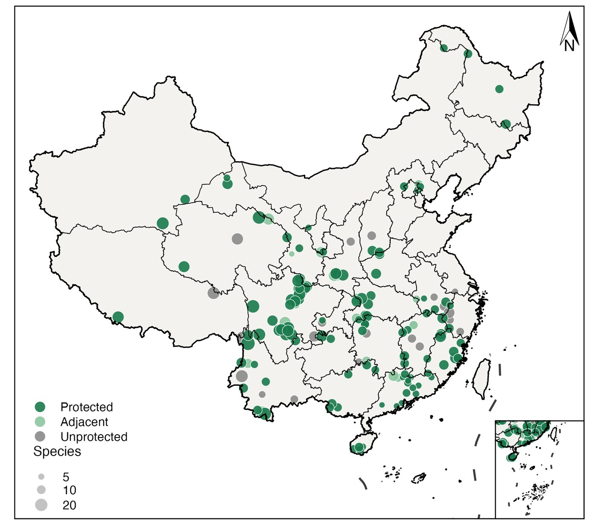
核心结论：中国相机调查对已拍到的物种基本拍全了，缺口主要来自期望物种本身的缺失，而缺失集中在食肉动物和大型、受威胁物种。保护状态本身没有改变这一格局；人类足迹在保护地内外同样筛掉大型物种。
1 · Background
研究背景
1.1 兽类的丧失是有选择的
全球陆生脊椎动物正在经历持续的种群衰退与局地消失，大型兽类首当其冲 (Dirzo et al. 2014)。狩猎显著降低了热带兽类和鸟类的种群密度 (Benítez-López et al. 2017)，大型兽类的高灭绝风险由内在性状和外在威胁共同驱动 (Cardillo et al. 2005)，大型食肉动物的衰退尤为普遍 (Ripple et al. 2014)。即使森林结构完整，大中型动物也可能在功能上消失，即“空林” (Redford 1992)。因此，衡量一个地区的兽类状况，不能只看物种名录，还要看期望出现的物种还剩多少、群落由谁主导。
1.2 红外相机让全国尺度的综合成为可能
红外相机已从单个保护地的调查工具发展为区域和全球监测网络 (Ahumada et al. 2011; Steenweg et al. 2017)，整合多项研究可以分析群落结构与占据格局 (Rich et al. 2017)。中国是相机调查增长最快的国家之一，近年已出现几项基于相机数据的全国性综合：
蒋爱伍团队
汇编 281 篇文献（2012–2022 年）、212 个站点、210 种兽类的相机数据集，发现保护地内的分类、功能和系统发育多样性都更高 (Liu, Kang & Jiang 2026)；并基于保护地相机数据指出，顶级捕食者的丧失伴随营养级降级 (Liu et al. 2025)。
何杰坤团队
在 85 个保护地（约 24 万 km²）比较历史调查与相机记录，发现食肉动物在保护地内普遍发生分布区收缩 (He et al. 2026)；并用地栖兽类和鸟类的数据检验丰度中心格局，发现物种性状调节这一格局 (Zhang et al. 2026)。
江建平等的红色名录
蒋志刚、江建平、王跃招等完成的《中国脊椎动物红色名录》系统评估了中国脊椎动物的受威胁等级 (蒋志刚等 2016; Jiang 2015)。本研究中的“受威胁”（CR、EN、VU）以中国红色名录为准，国内评估普遍严于全球评估。
此外，基于 199 个保护地的多维暗多样性分析也表明，中国保护地网络中的物种丧失是非随机的 (Zhu et al. 2026，预印本)。这些研究以保护地或站点为单元，回答了“缺了谁”，但大多没有区分一个物种没有被拍到，是因为它真的不在，还是因为调查努力不足以拍到它。
1.3 “没拍到”有三种可能
暗多样性框架把一个地点“适宜但缺失”的物种作为可度量的量 (Pärtel et al. 2011)，全球植物研究显示人类足迹显著降低群落完整性 (Pärtel et al. 2025)。对红外相机而言，一个期望物种没被记录，可能是局地消失，也可能是努力不足，还可能是分布图本身画大了。相机检出率随物种密度、活动和行为差异很大，所需努力可相差几个数量级 (Kays et al. 2020)；只有单次清查时，区分“占据”与“检出”还需要额外的假设 (Lele et al. 2012)。不把这三种可能分开，就会把调查不足误读为物种丧失。
1.4 常见与稀有
局地丰度高的物种通常分布更广，即多度–占据关系 (Brown 1984; Gaston et al. 2000)。稀有性可以分解为分布范围、生境特化与局地种群大小 (Rabinowitz 1981)，分布范围与种群特征都是灭绝风险的重要预测变量 (Purvis et al. 2000)。相机记录的相对丰度提供了在全国尺度检验这些关系的机会，但相对丰度指数同时混有丰度和可检测性 (Sollmann et al. 2013)。
1.5 保护地与人类压力
人类足迹指数综合了建成区、农田、牧场、人口密度、夜间灯光、道路、铁路和可航行水道等压力 (Venter et al. 2016)，并已有逐年的全球数据 (Mu et al. 2022)。全球约三分之一的保护地承受高强度人类压力 (Jones et al. 2018)，保护地遏制压力的成效差异很大 (Geldmann et al. 2019)。中国保护地覆盖了大量重点物种，但存在保护空缺 (Xu et al. 2017)；全球相机综合显示保护地有助于维持兽类多样性 (Beaudrot et al. 2016; Chen et al. 2022)。评估难点在于保护地选址偏向“高且远”的地点，而人类足迹既可能是混杂变量，也可能是保护起作用的途径。
2 · Gaps
研究空缺与本研究的切入点
| 编号 | 已有研究的不足 | 本研究的切入点 |
|---|---|---|
| G1 | 文献数据分散，缺少覆盖中英文、经过清洗和标准化的全国证据库；相对丰度指数口径不一 | 931 篇文献的标准化数据库；评估文献完整性与 RAI 可复现性 |
| G2 | 不清楚调查投到了哪里、哪些区域和保护地从未被调查 | 网格热点、按期望丰富度标准化的覆盖比、保护地监测覆盖 |
| G3 | 不同物种需要多少努力才能拍到没有定量标准 | 物种特异检出模型（CD90）与检出–努力关系（努力弹性） |
| G4 | “没拍到”没有区分为采样不足与群落缺失 | 省级累积与覆盖度、站点占据–检出模型，分别给出采样完整度和群落完整性 |
| G5 | 缺失是否非随机、缺的是谁，缺少以检出为条件的全国证据 | 确认 / 沉默 / 未测三态分类；按营养级、体型、受威胁等级检验 |
| G6 | 群落相对丰度结构与稀有性维度很少在全国尺度检验 | 只用组成与丰度完整的清查；站点内份额规避缩放误差；系统发育回归 |
| G7 | 保护地评估多为内外二分，混杂选址，少检验能否缓冲人类压力 | 总效应与直接效应分开、中介与缓冲检验、空间随机场、物种层分化 |
空缺基于所引文献与项目文献库整理，投稿前须系统检索确认。
3 · Questions
科学问题
研究按“先看数据和调查本身，再看物种，最后看驱动和保护”的顺序设置六个问题，前一个问题的答案是后一个问题的前提。
Q1调查投到了哪里？
文献规模、空间分布、保护地监测覆盖，以及数据本身的可比性如何。
Q2物种多难拍到？
每个物种需要多少相机日才有九成把握拍到；增加相机日能带来多少额外检出。
Q3已有调查拍全了吗？
省级和站点的采样完整度：在的物种拍到了多少。
Q4期望物种还剩多少，缺的是谁？
群落完整性，以及缺失是否集中在食肉动物、大型或受威胁物种。
Q5群落由谁主导？
相对丰度结构、多度–占据关系，以及哪种稀有性与受威胁相关。
Q6什么在驱动，保护地有没有用？
气候、人类足迹与保护状态的作用；保护地能否缓冲人类压力；哪些物种受益或受损。
4 · Framework
研究框架与技术路线
文献数据库是一切分析的起点；站点证据库在此基础上加入坐标、协变量和期望物种池；覆盖、检出、完整性、结构和保护五组分析依次展开，每组都以前一组为条件。
| 分析 | 对应模块 | 核心方法 |
|---|---|---|
| Ⅰ 数据基础 | 14_litdb_analysis | 清洗与分类协调（8 条路线）；负二项增长模型；RAI 复算 |
| Ⅱ 调查覆盖 | 16_coverage | 捕获–再捕获估计文献完整性；Getis-Ord Gi* 热点；保护地最近距离 |
| Ⅲ 物种检出率 | 15_evidence_db；21 占据模型 | 饱和检出模型 P = ψ(1 − e−λE)；层级贝叶斯占据–检出模型 |
| Ⅳ 采样完整度 | 21_province_completeness；16_coverage | iNEXT 累积与样本覆盖度；Chao2；站点后验存在概率 |
| Ⅴ 群落完整性 | 15_evidence_db；21 | 确认 / 沉默 / 未测三态；五维完整性；系统发育二项模型 |
| Ⅵ 结构与稀有性 | 22_relative_abundance | 站点内份额与 Hill 数；系统发育回归 |
| Ⅶ–Ⅷ 驱动与保护 | 15；21；22 | beta / 二项混合模型；熵平衡；空间随机场；障碍式物种模型 |
| Ⅸ 监测优先区 | 16_coverage | 期望丰富度 × 调查努力；四分量综合指数与权重敏感性 |
Part Ⅰ · Data
Ⅰ 数据基础：中国红外相机文献数据库
要回答的问题：证据库有多大、分布在哪里、数据能否跨研究比较。
数据库收录 933 条文献，去重后 931 篇（中文 677、英文 254），来自 236 种期刊，发表于 2004–2026 年；含 1,221 个调查单元、35,404 条物种层指标记录。分类名经 8 条匹配路线协调，91.4% 解析到种，共 993 种（兽类 279、鸟类 706）。629 篇报告了相机日，合计约 2,500 万相机日。
- 增长迅速。2010–2025 年中文文献年均增长 25.3%，英文 28.2%，约每 3 年翻一番。
- 空间集中。四川 122 篇、云南 95 篇，两省超过可定位清查的三分之一；山东、香港、台湾各不足 3 篇。
- 口径不一。同名为 RAI 的指标至少在乘数（每 100 或每 1,000 相机日）、分母（相机日或探测总数）和独立性阈值三个维度上不同；30 分钟阈值占 89.6%。
- 可复现性有限。8,711 个可复算的 RAI 中只有 74.0% 与报告值一致，45 篇中文文献的复现率低于 10%。这一点决定了后续相对丰度分析必须使用对缩放不敏感的站点内份额。
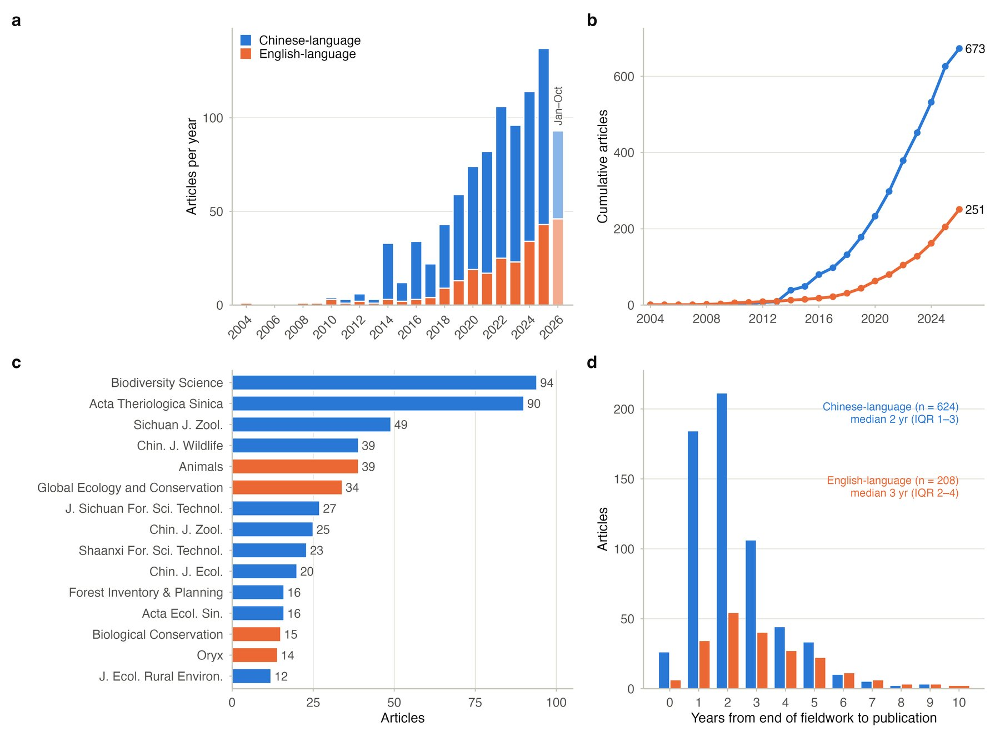
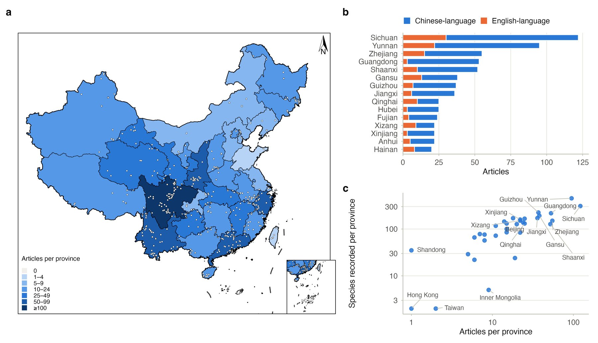
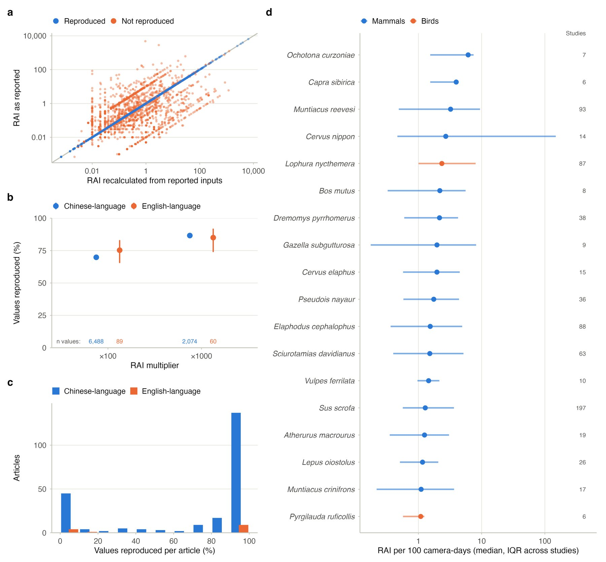
Part Ⅱ · Coverage
Ⅱ 调查覆盖与监测空缺
要回答的问题：调查投到了哪里，哪些区域和保护地从未被调查。这决定了后面所有结论能推广到多大范围。
- 文献完整性。OpenAlex 与本库的两源捕获–再捕获估计，中国英文红外相机野外研究约 588 篇，本库收录 43%（39–46%）；中文期刊中《生物多样性》覆盖 57%。
- 投入高度集中。100 km 网格中 127 格为调查努力热点，集中在横断山、秦岭—大巴山与东南丘陵。按期望物种丰富度标准化，干旱温带区覆盖比仅 0.32，青藏高原 0.46；内蒙古、新疆、西藏只有 0.18。干旱温带区的覆盖比由 2015 年前的 0.78 降到 2021 年后的 0.21，相对空缺在扩大。
- 保护地监测覆盖不均。陆地类型保护地中，25 km 内没有已发表相机调查的比例，国家级 41%、省级 64%、县市级 82%；按面积加权，国家级只有 38% 有调查，最大的那批保护地多半无人调查。控制省份后，国家级被覆盖的几率是县市级的 6.1 倍（95% CI 3.1–12.0）。
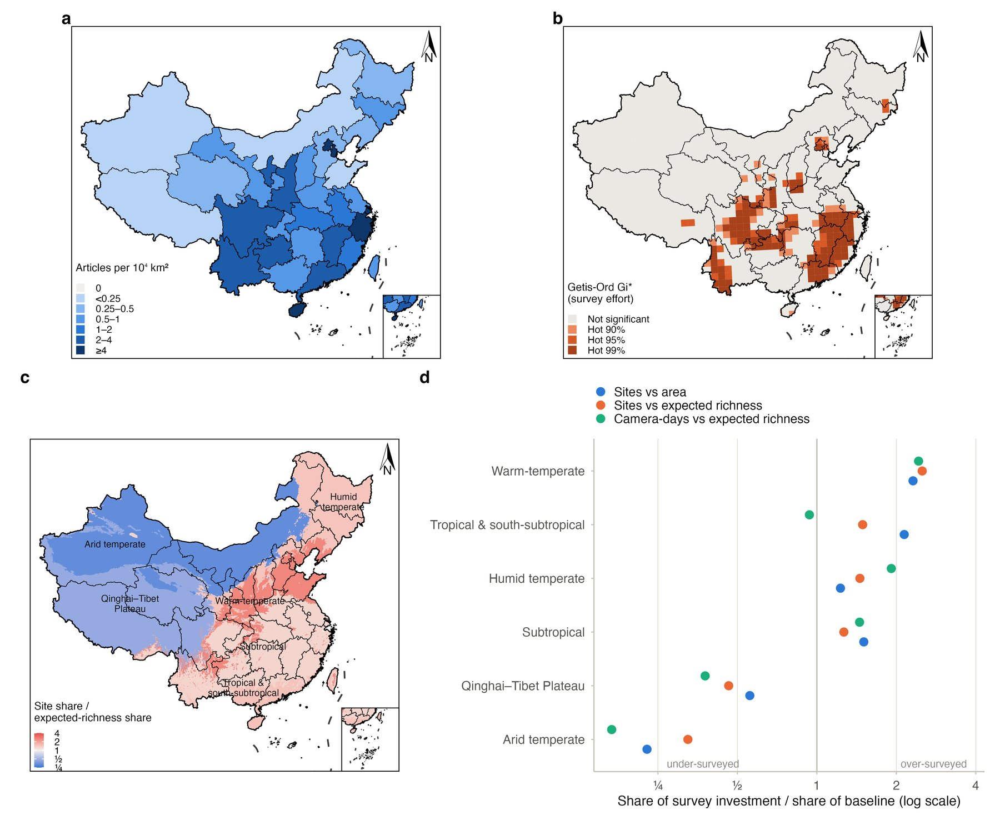
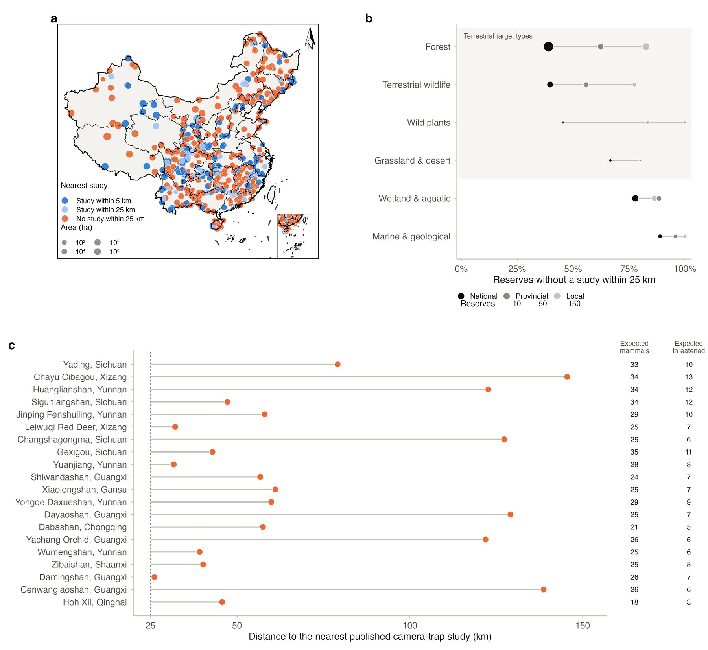
Part Ⅲ · Detection
Ⅲ 物种检出率评估
要回答的问题：一个物种在场时需要多少相机日才能拍到。只有知道这一点，才能判断“没拍到”到底意味着什么。
物种特异的检出标准（CD90）
对池内站点充足的 51 种兽类，拟合饱和检出模型，估计物种在场时 90% 概率被拍到所需的相机日（CD90）：
- 相差四个数量级。CD90 中位 2,758 相机日（IQR 476–7,641）。野猪、狼和麂类不到 100 相机日；中华穿山甲和荒漠猫超过 30,000。
- 典型清查够测常见种，不够测稀有猫科。中位清查约 12,000 相机日，足以检验多数有蹄类和常见中型食肉动物，但对稀有猫科、穿山甲和兔狲，不到一半的池内站点达到充分努力。
努力与检出的关系
站点层的层级贝叶斯占据–检出模型（自写 Stan，244 个站点 × 97 种）进一步估计了检出随相机日增长的速度。数据明确拒绝“检出与相机日成正比”的假设：努力弹性 γ = 0.13 [0.06, 0.19]，即相机日增加 10 倍，期望检出只增加约 1.35 倍（LOO 优势 107.5，SE 17.6）。在同一片区域延长布设，收益有限；扩大空间范围和更换生境更重要。
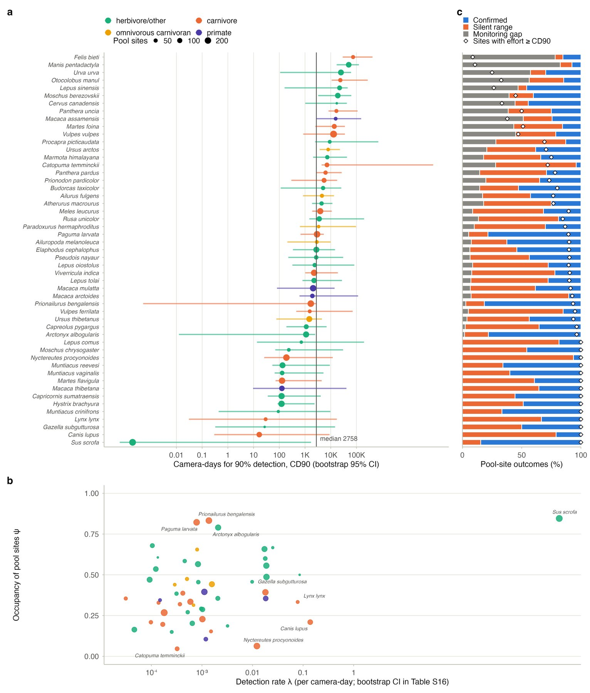
Part Ⅳ · Sampling completeness
Ⅳ 采样完整度评估
要回答的问题：已在场的物种拍到了多少。采样完整度只回答“拍全了没有”，不涉及期望物种是否还在。
省级：相机日、物种累积与样本覆盖度
- 兽类：已检出的群落基本拍全。323 篇群落清查，20 个省有 ≥ 5 篇；最终样本覆盖度中位 0.98（0.79–1.00）；18 个省达到 Ĉ = 0.90，所需相机日中位 112,924。
- 覆盖度高不等于完整度高。统一到 Ĉ = 0.90 时，完整度中位只有 62%。相机日每增加 10 倍，完整度的几率比为 3.10（1.91–5.03）。
- 鸟类远未饱和。地栖鸟类最终覆盖度中位 0.87，只有 5 个省达到 0.90；完整度达 50% 约需 35 万相机日，是兽类的 10 倍以上。
- 区域编目完整度。Chao2 估计的兽类编目完整度在西北、西南约 82%–83%，华南、华中约 52%；东北鸟类仅 34%。
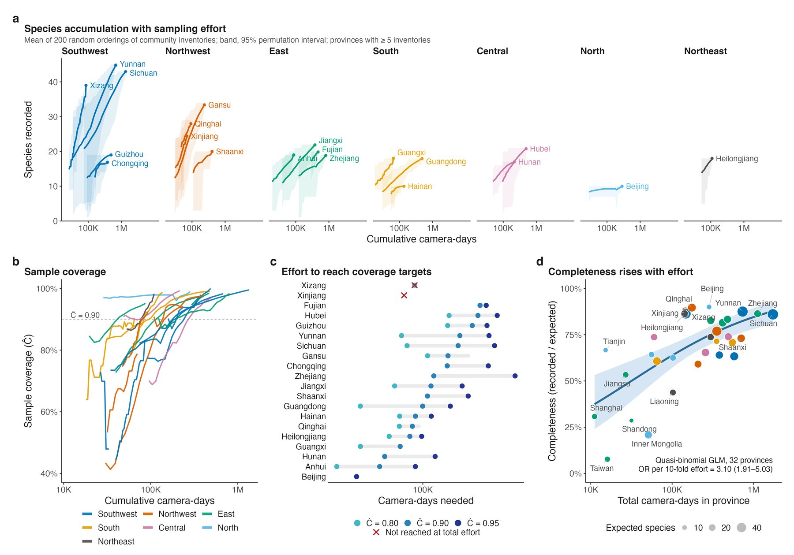
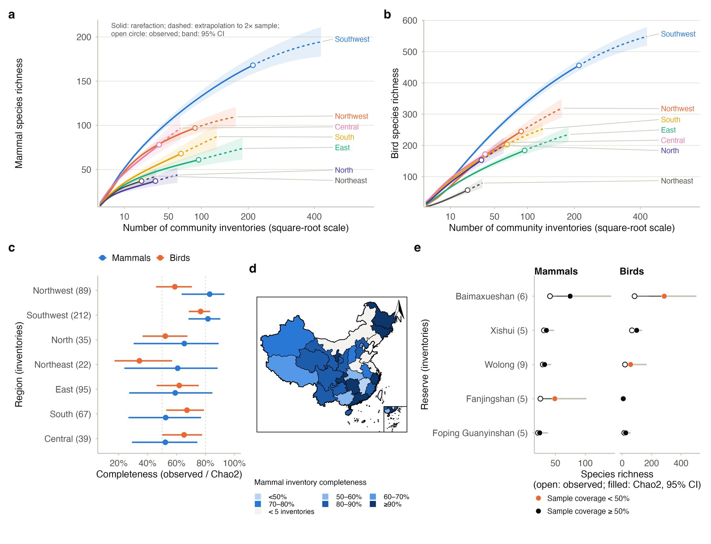
站点与省级：占据模型给出的采样完整度
占据–检出模型对每个未检出的站点 × 物种组合给出“在场但漏拍”的后验概率，从而把采样完整度（检出 / 估计在场）落到站点：站点中位 0.69（IQR 0.57–0.80），省级中位 0.86。站点采样完整度随相机日上升（ρ = 0.31，p < 0.001），符合采样完整度应当依赖努力的预期。按努力分层的后验预测检验中，五个努力层的观测检出率都落在 95% 预测区间内。
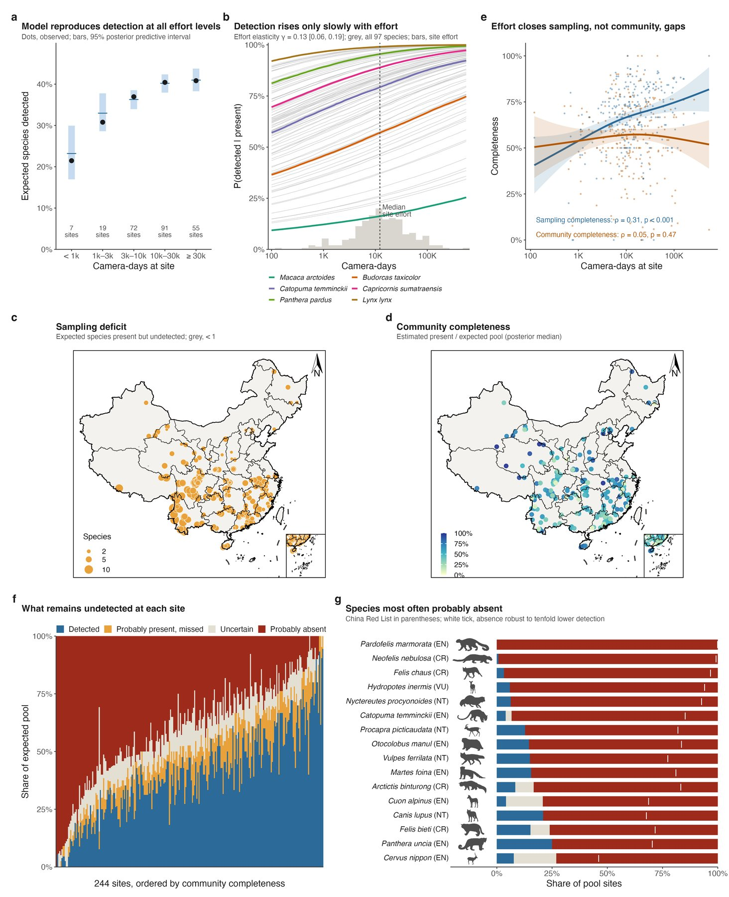
Part Ⅴ · Community completeness
Ⅴ 群落完整性评估
要回答的问题：期望的物种还剩多少，缺的是谁。群落完整性以期望物种池为分母，回答“应有的物种还在不在”。
确认、沉默与未测
对 244 个群落清查中的 5,717 个期望组合，用物种特异的 CD90 判断努力是否充分：拍到了记为“确认”，努力充分仍未拍到记为“沉默”，努力不足记为“未测”。
- 一半沉默，七分之一未测。确认 38%，沉默 48%，未测 14%。中位站点期望 22 种，确认 8.5 种。把检出率在 bootstrap 区间内变动，沉默比例在 27%–57% 之间，确认比例不变。
- 五维完整性。分类完整性中位 0.40，检出校正后 0.43，受威胁加权 0.33，功能 0.33，系统发育 0.61。检出校正只把完整性提高了 0.03，说明典型站点的缺口主要不是努力问题。
- 占据模型的一致结论。站点群落完整性中位 0.58，省级（以省级物种池为分母）0.79；3,537 个未检出组合中多半仍在的占 17%，多半不在的占 67%。群落完整性与相机日无关（ρ = 0.05），多拍补不回已经不在的物种。
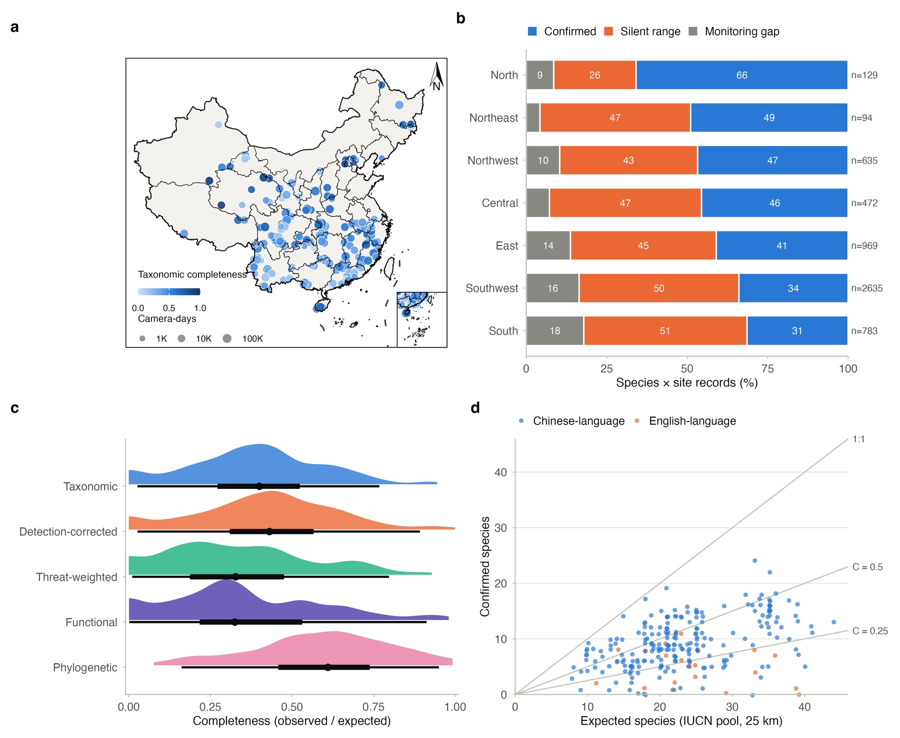
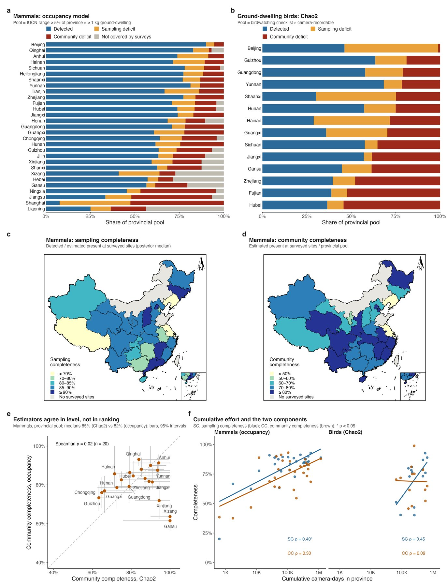
缺的是谁
- 食肉动物，而不是大型物种。69 种的沉默率中位 0.61。系统发育二项模型中，以动物为食的物种沉默概率显著更高（+1.07 logit，95% 可信区间 0.01–2.15），体重无效应，系统发育信号可忽略（λ = 0.01）。云豹在 128 个充分调查的站点中只有 1 次记录。
- 受威胁物种。补调查目标（多半在场但漏拍）以食蟹獴、斑林狸、红面猴、中华穿山甲为首；检出率降为 1/10 后仍判为不在的稳健候选消失有云豹（143/144 个站点）、金猫、兔狲、石貂、荒漠猫。
- 分布图本身也有误差。282 条记录（58 种）落在 IUCN 分布图外 25 km 以上，11 条记录出现在 IUCN 标为可能灭绝或灭绝的区域。“多半不在”因此同时包含局地消失和分布图高估两种可能。
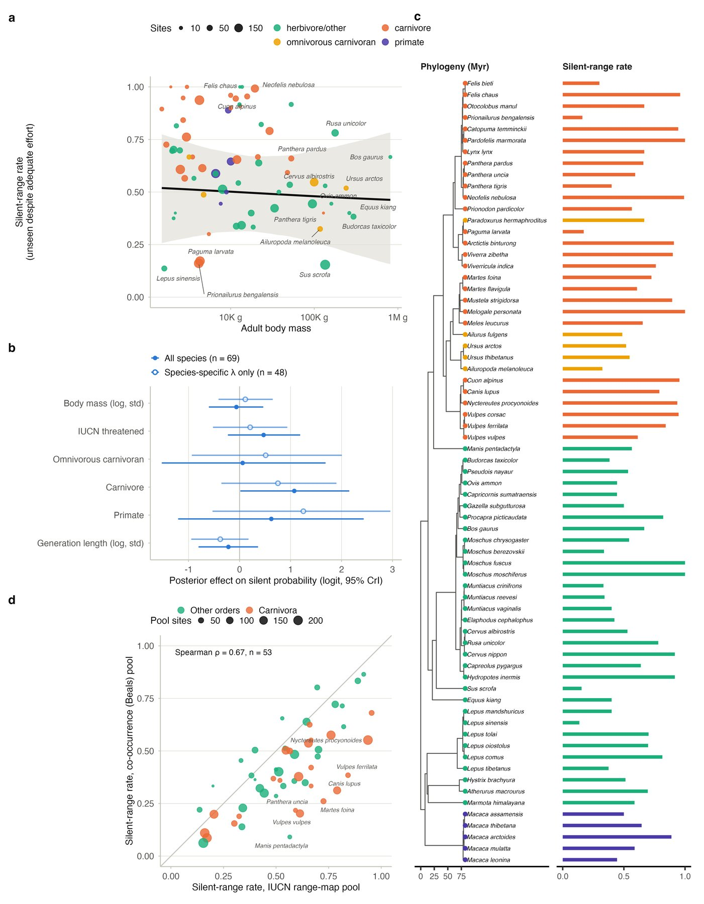
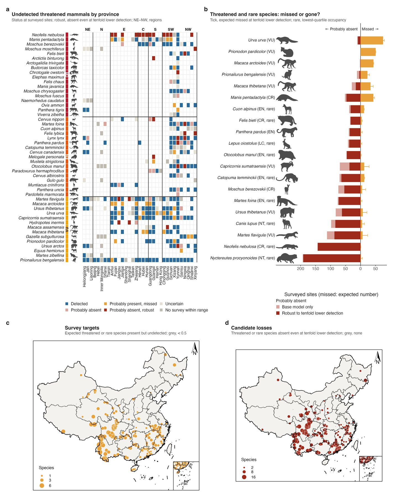
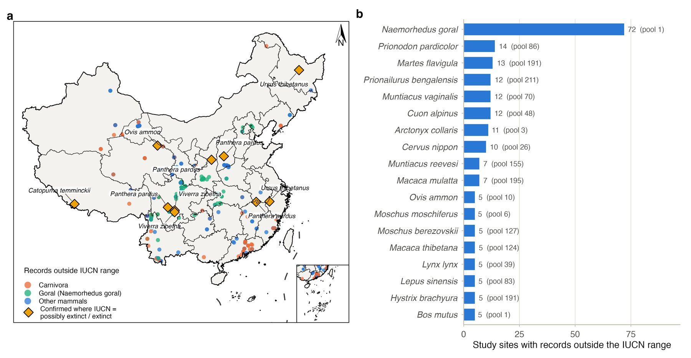
Part Ⅵ · Structure and rarity
Ⅵ 群落结构与稀有性
要回答的问题：在场的群落由谁主导，常见种与稀有种有什么区别。这部分只用物种组成与相对丰度都完整的 158 个群落级清查，并以站点内份额 pij = Aij / Σj Aij 为基本量：同一站点各物种的 RAI 共用同一定义，份额不受 Ⅰ 中发现的整体缩放误差影响。
- 少数有蹄类主导。份额最大的两个物种合计占探测的中位 66%；检出中位 11 种，但 Hill 有效物种数只有 3.6–4.5；119/158 个站点的优势种是偶蹄类，最常见的是小麂、野猪、毛冠鹿和赤麂。
- 多度–占据关系成立。局地丰度高的物种在分布区内占据率也高（系统发育回归斜率 0.40 [0.16, 0.64]，p = 0.002）。
- 与受威胁相关的稀有性维度。分布面积小（OR 0.52）和局地丰度低（OR 0.36）与受威胁相关，分布区内占据率无关（OR 1.11）。在 0、1、2、3 个维度上稀有的物种，受威胁比例依次为 25%、39%、75%、100%。这一关联部分是循环的，因为红色名录评估本身依据分布与种群。
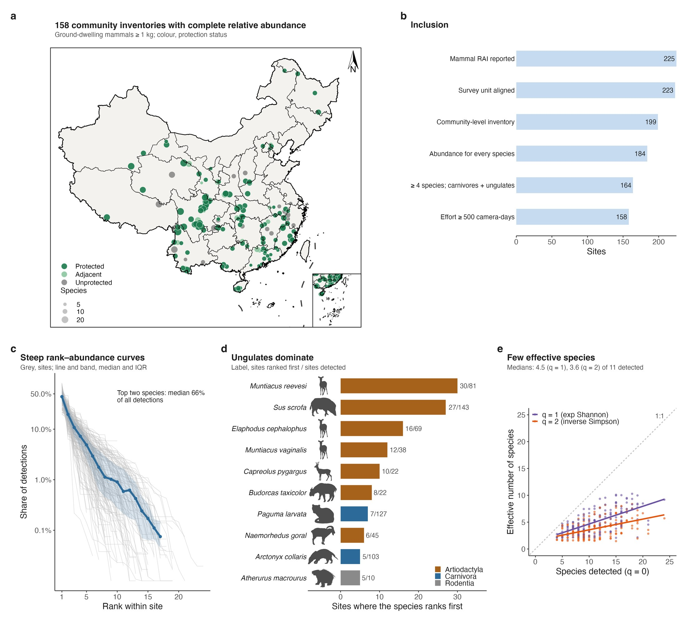
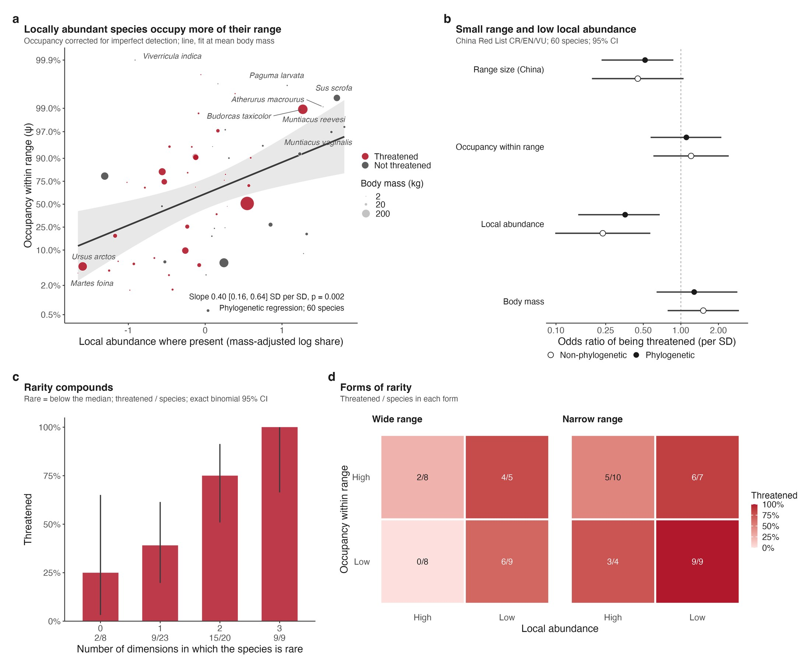
Part Ⅶ · Drivers
Ⅶ 驱动因素：气候、人类足迹与体型过滤
要回答的问题：是什么决定了一个站点缺多少、缺了谁。三组分析看的是不同的响应变量，结论需要放在一起读。
- 群落完整性跟温度走。五维完整性的 beta 混合模型中，越暖的站点完整性越低（功能完整性 −0.55 / SD，95% CI −1.00 至 −0.09），当代人类足迹和保护状态均无可检出效应。南方温暖、开发历史长的地区期望物种多、清查最空，温度在这里很可能代表了历史上的清除，而非当代压力。
- 是否被记录取决于调查是否到达分布区。省级物种 × 省份二项模型中，分布区内的群落位点数（+1.17）、分布区占省比例（+0.92）和保护区比例（+0.86）为正，年均温为负（−1.04）。
- 群落组成按体型被人类足迹过滤。相对丰度分析中，人类足迹每增加 1 SD，受威胁种份额下降 5.6 个百分点，大型兽类份额下降 9.5 个百分点，群落平均体重轻约 23%。物种层障碍式模型中，足迹 × 体重的交互在出现（−0.39）和相对丰度（−0.19）两部分都为负，并在所有敏感性分析中保持。
完整性不随足迹变化而组成随足迹变化，二者并不矛盾：足迹高的地方大型物种减少、小型常见物种增加，期望物种的总数变化不大，但群落由谁组成已经改变。只看物种在不在，会漏掉这种替换。
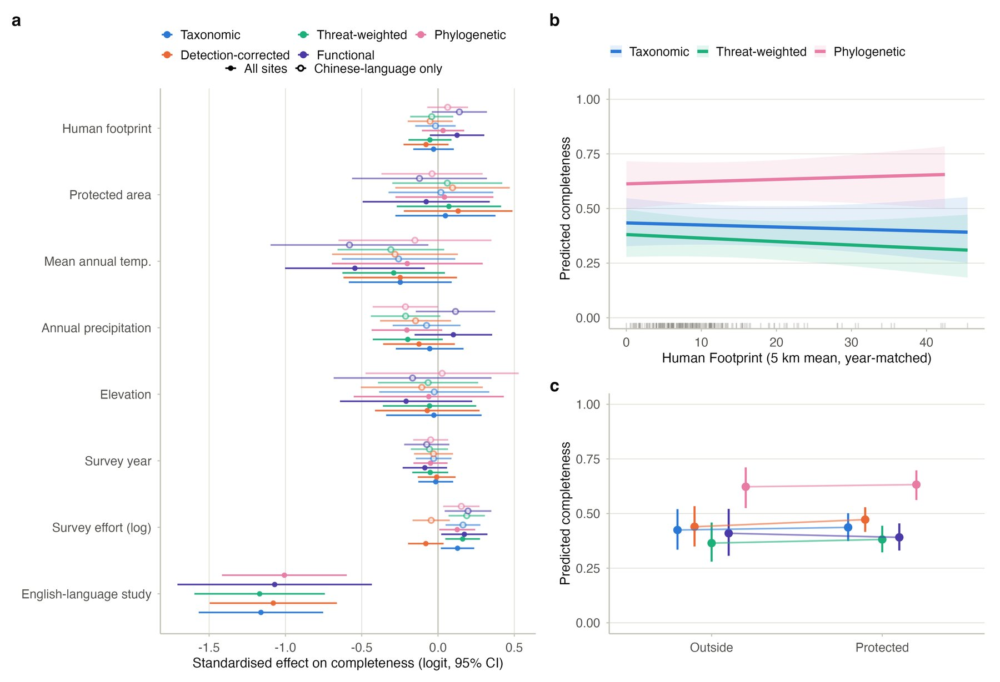
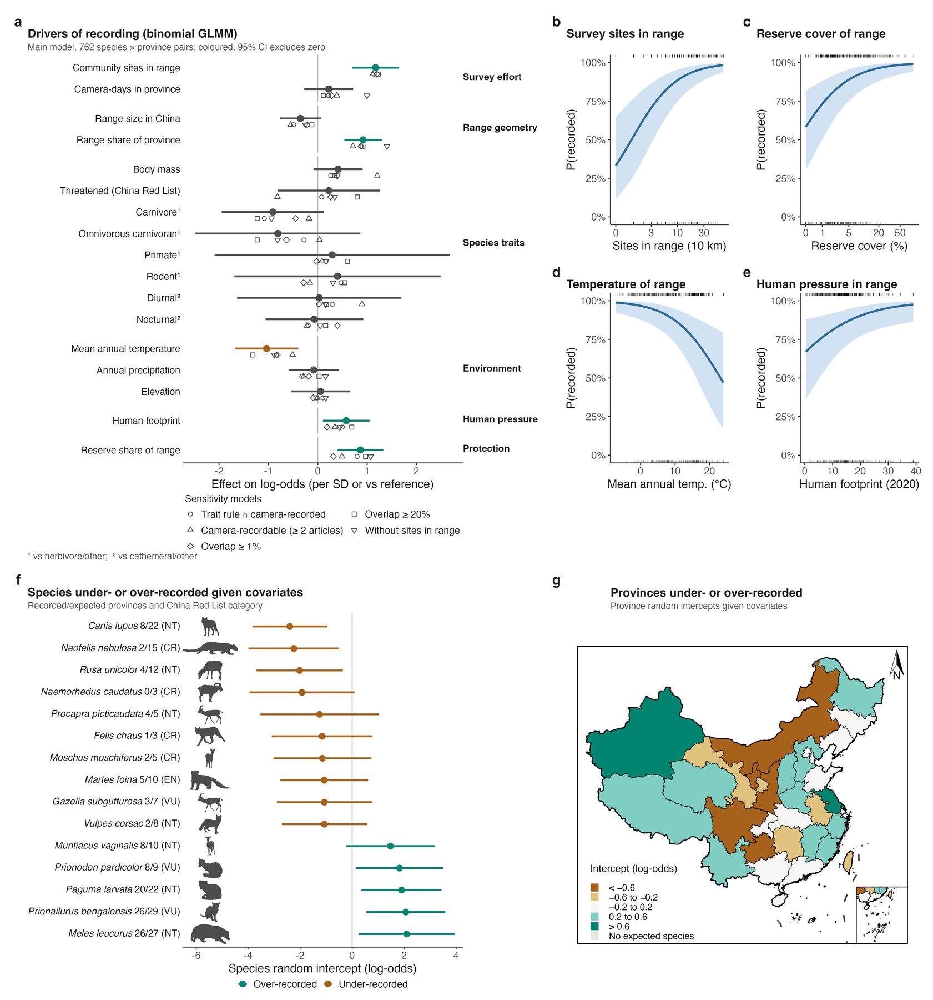
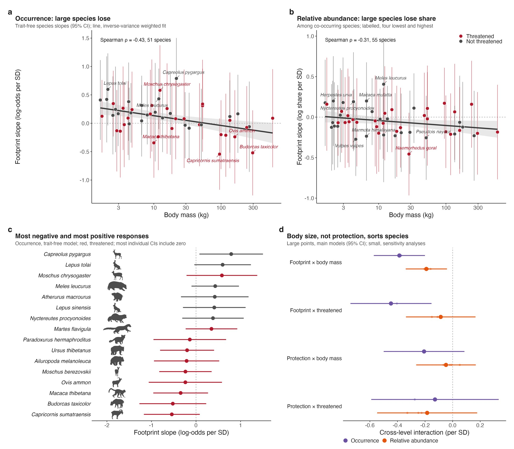
Part Ⅷ · Protection
Ⅷ 保护成效评估
要回答的问题：保护地内的群落是否更完整、组成是否不同、能否缓冲人类压力。保护地选址偏向“高且远”，所以每项比较都调整了海拔、气候、努力和年份。
- 完整性：保护地内外无差异。国家级保护地与非保护站点的受威胁加权完整性差 +0.11 logit（95% CI −0.25 至 0.46）。
- 食肉动物在保护地内同样沉默。云豹在 111 个充分调查的保护地站点中 110 个沉默，豺 36/37，金猫 42/45，狼 90/111，豹 28/40。这与何杰坤团队报告的保护地内食肉动物分布区收缩一致。
- 反复调查仍未记录。省级分析中 223 个未记录组合有 113 个（受威胁 49 个）在分布区内已有 ≥ 3 个群落位点；云豹在 15 个期望省份中只有 2 省有记录。
- 营养级降级：未重现。有顶级捕食者与无顶级捕食者的站点间，中型食肉动物与非野猪有蹄类的 RAI 没有差异。这是置信区间较宽的零结果，文献 RAI 的口径噪声可能掩盖了真实信号，并不否定基于标准化监测网络的结论 (Liu et al. 2025)。
- 组成：保护状态本身无关，也没有缓冲。保护地内的人类足迹确实更低（低 0.48 SD），但五项组成指标在保护地内外都没有显著差异（Holm 校正；严格定义和空间随机场下一致）。足迹的负效应在保护地内同样显著，保护 × 足迹交互的 p 值为 0.43–0.99。保护地外只有 21 个站点，现有数据只能排除约 8 个百分点以上的差异。
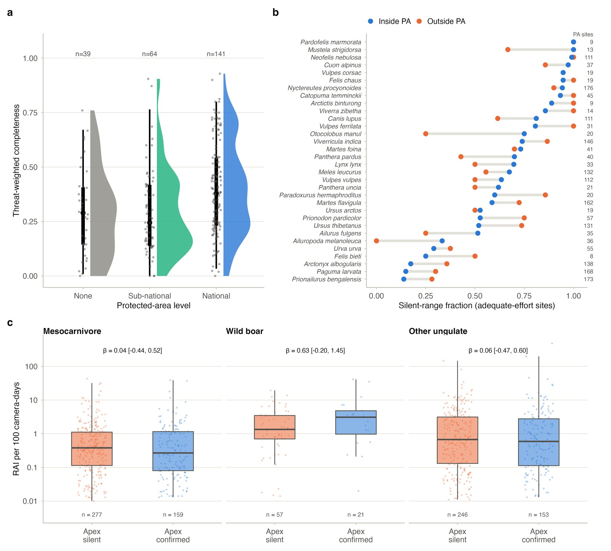
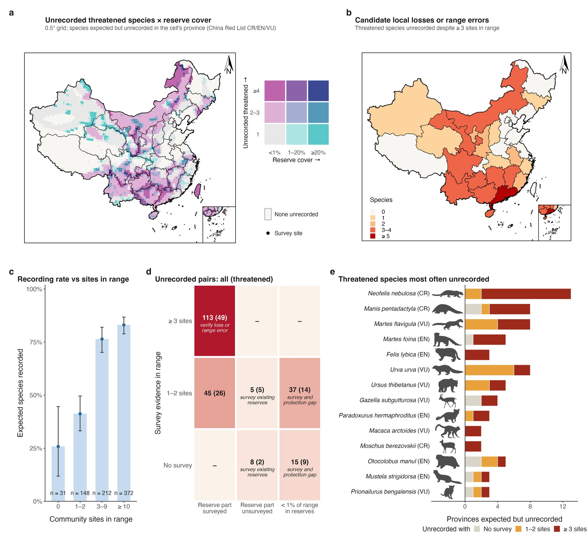
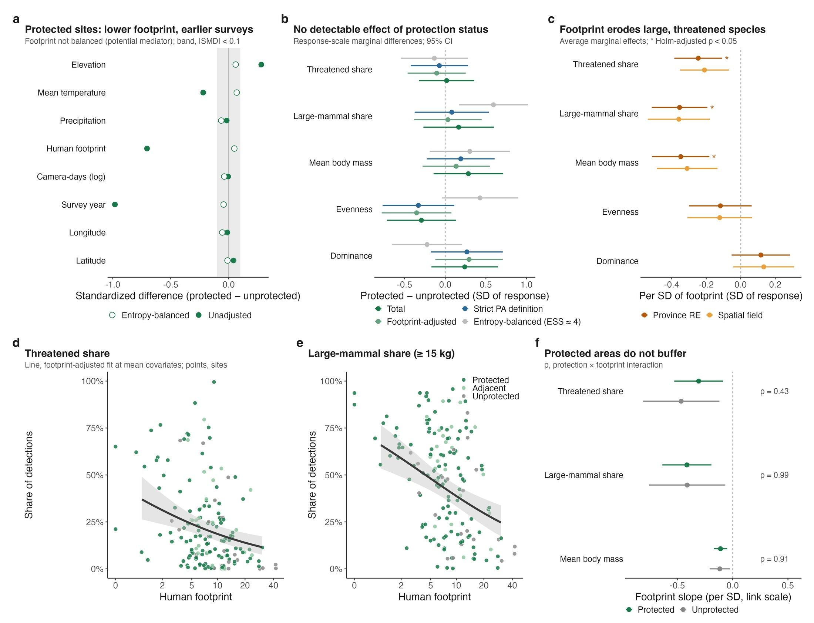
Part Ⅸ · Priorities
Ⅸ 监测优先区
要回答的问题：下一步的调查应该投向哪里。
- 高丰富度区多半无调查。0.5° 网格中 93% 没有已定位的相机研究；期望 ≥ 20 种的 1,174 格中 987 格（84%）为空白，集中在横断山北部、秦岭山麓和南方丘陵。
- 综合优先指数。把期望丰富度、期望受威胁种、调查努力缺口和保护地监测缺口等权合成，前 10% 的 417 个网格主要在四川、西藏、云南和新疆；在 10 种权重方案中至少 80% 入选的稳健优先网格有 215 格。
- 按物种设计努力。一次以穿山甲为目标的调查需要约 30,000 相机日，麂类只需约 100；按物种汇总努力的监测会持续产出“未测”而非“缺失”的结论。
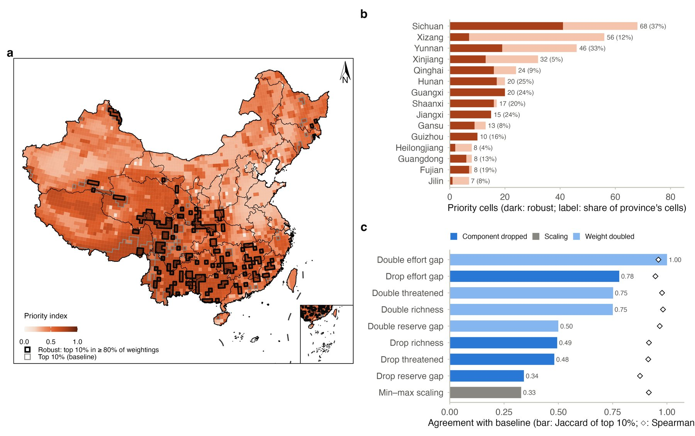
Synthesis
综合认识
- 缺口主要是物种不在，而不是没拍到。省级覆盖度高（Ĉ 0.98），站点采样完整度 0.69 而群落完整性只有 0.58，检出校正只把完整性提高 0.03。增加原地努力能补的空间有限（γ = 0.13）。
- 缺失有明确的对象。以检出为条件，沉默集中在食肉动物；相对丰度上，大型和受威胁物种在人类足迹高的地方份额更低。前者回答“谁不见了”，后者回答“谁在变少”，两条证据指向同一批物种。
- 不同响应对应不同驱动。“在不在”跟温度（历史清除的代理）走，“组成如何”跟当代人类足迹走。两者结合，说明既有历史遗留的缺失，也有正在进行的替换。
- 保护状态本身不能区分结果。在完整性、食肉动物沉默和群落组成三个层面，保护地内外都没有可检出的差异，人类足迹的负效应在保护地内同样存在。这与何杰坤团队关于保护地内食肉动物分布区收缩的结论一致。提示评估保护成效时，压力是否被有效降低可能比是否位于保护地内更关键。
- 证据本身有空白。英文文献收录 43%，高丰富度网格 84% 无调查，国家级保护地按面积只有 38% 有调查。以上结论适用于已调查的区域，空白区需要新的调查来检验。
Rigor
统计严谨性
| 方面 | 做法 |
|---|---|
| 缺失的解释 | 以物种特异检出标准区分确认、沉默与未测；残存低密度种群压力测试（检出率降为 1/10） |
| 可比性 | RAI 统一单位并复算；相对丰度用站点内份额；跨物种比较用体重校正 |
| 非独立性 | 区域、省份、1° 网格随机截距；站点与物种随机效应；系统发育回归 |
| 混杂与中介 | 海拔、气候、努力、年份、文献语言；熵平衡；保护效应的总效应与直接效应分开 |
| 空间自相关 | 残差 Moran's I；网格随机截距或指数空间随机场 |
| 模型选择与诊断 | LOO 逐级比较；R-hat、ESS、发散；DHARMa 残差；后验预测检验 |
| 多重比较 | 多个响应的 Holm 校正（证据库的探索性分析另附 Holm 调整值） |
| 敏感性 | 期望池（10 / 25 / 50 km、仅 Extant、Beals 共现池）；检出阈值 0.80–0.95；物种池口径；RAI 来源与阈值；严格保护定义 |
| 循环论证 | 物种斜率与体重的相关只用不含性状的模型；受威胁与稀有性的关联注明部分循环 |
| 检验功效 | 报告置信区间宽度，不把“无显著差异”写成“无效应” |
Limits
局限
- 文献不是随机样本。英文文献收录约四成，中文期刊尚需知网补检；调查集中在少数山地和保护地。
- 分布图误差。IUCN 分布图粒度粗，“沉默”或“多半不在”中有一部分是制图误差；共现池把沉默率降低约三分之一，但物种排序与食肉动物效应不变。
- 检出模型的假设。单次清查中占据与检出的区分依赖努力梯度和函数形式；检出率仅 51 种可单独估计，其余借用中位数。
- RAI 口径。份额能消除整体缩放差异，不能消除物种间可检测性差异。
- 保护效应的功效。保护地外站点少（相对丰度分析中 21 个，证据库中 106 个），人类足迹可能是保护的中介，调整后可能低估总效应。
- 时间与空间精度。人类足迹为 5 km 均值并按最近年份匹配；部分坐标为研究区中点；截面数据不能推断时间趋势。
Reproducibility
可复现性
# Ⅰ 文献数据库 Rscript 14_litdb_analysis/scripts/01_clean_bibliographic.R # 至 06_temporal_dynamics.R # Ⅲ、Ⅴ 站点证据库(检出、证据状态、完整性) Rscript 15_evidence_db/scripts/06_site_covariates.R # 至 15_threshold_sensitivity.R # Ⅱ、Ⅸ 覆盖与优先区 Rscript 16_coverage/scripts/03_spatial_coverage.R # 至 11_composite_priority.R # Ⅳ、Ⅴ 省级与站点完整度(占据模型 occ_effort.stan) Rscript 21_province_completeness/scripts/01_build_province_pool.R # 至 11_chao2_province.R # Ⅵ–Ⅷ 相对丰度、驱动与保护 Rscript 22_relative_abundance/scripts/01_build_rai.R # 至 05d_figA4.R
环境：R 4.5.1；glmmTMB 1.1.14、lme4 1.1.37、brms 2.23.0、cmdstanr 0.8.0、marginaleffects 0.32.0、DHARMa 0.4.7、phylolm 2.6.5、iNEXT、spdep 1.4.1、sf 1.0.23。所有地图使用标准地图 GS(2024)0650。分析代码与数据未在本页公开；逐站点物种组成、站点坐标与 IUCN 派生的期望池不对外分发。
Next steps
下一步
- 补齐文献：中文期刊在知网补检，复核 189 篇候选遗漏英文文献与 521 条剔除记录。
- 补充保护地外的群落清查，提高保护效应的检验功效。
- 把人类足迹拆成道路、农田、人口与夜间灯光，识别驱动体型过滤的压力来源。
- 对多年调查的站点做时间序列，检验大型兽类和食肉动物是否在持续减少。
- 对“稳健多半不在”的组合，结合历史记录或定向调查区分局地消失与分布图高估。
- 按物种 CD90 设计优先区的补充调查，并推广到地栖鸟类。
References
参考文献
DOI 于 2026-10-19 经 Crossref 核实；Rabinowitz 1981 为书章，Zhu et al. 2026 为预印本。
- Ahumada JA, et al. (2011) Community structure and diversity of tropical forest mammals: data from a global camera trap network. Phil Trans R Soc B 366:2703–2711. doi:10.1098/rstb.2011.0115
- Beaudrot L, et al. (2016) Standardized assessment of biodiversity trends in tropical forest protected areas: the end is not in sight. PLoS Biol 14:e1002357. doi:10.1371/journal.pbio.1002357
- Benítez-López A, et al. (2017) The impact of hunting on tropical mammal and bird populations. Science 356:180–183. doi:10.1126/science.aaj1891
- Brown JH (1984) On the relationship between abundance and distribution of species. Am Nat 124:255–279. doi:10.1086/284267
- Cardillo M, et al. (2005) Multiple causes of high extinction risk in large mammal species. Science 309:1239–1241. doi:10.1126/science.1116030
- Chen C, et al. (2022) Global camera trap synthesis highlights the importance of protected areas in maintaining mammal diversity. Conserv Lett 15:e12865. doi:10.1111/conl.12865
- Dirzo R, et al. (2014) Defaunation in the Anthropocene. Science 345:401–406. doi:10.1126/science.1251817
- Gaston KJ, et al. (2000) Abundance–occupancy relationships. J Appl Ecol 37:39–59. doi:10.1046/j.1365-2664.2000.00485.x
- Geldmann J, et al. (2019) A global-level assessment of the effectiveness of protected areas at resisting anthropogenic pressures. PNAS 116:23209–23215. doi:10.1073/pnas.1908221116
- He J, Zhang L, Yu J, Wang F, Xiao Z, Liu J (2026) Widespread range contraction of carnivores in protected areas of China. Nat Sustain 9:1188–1197. doi:10.1038/s41893-026-01855-2
- Jiang Z (2015) China renews its vertebrate Red List. Oryx 49:14–15. doi:10.1017/s0030605314000933
- Jones KR, et al. (2018) One-third of global protected land is under intense human pressure. Science 360:788–791. doi:10.1126/science.aap9565
- Kays R, et al. (2020) An empirical evaluation of camera trap study design: how many, how long and when? Methods Ecol Evol 11:700–713. doi:10.1111/2041-210X.13370
- Lele SR, Moreno M, Bayne E (2012) Dealing with detection error in site occupancy surveys: what can we do with a single survey? J Plant Ecol 5:22–31. doi:10.1093/jpe/rtr042
- Liu J, Kang Y, Jensen AJ, Kays R, Jiang A (2025) Apex predator loss drives trophic downgrading in China's protected areas. Curr Biol 35:2872–2880. doi:10.1016/j.cub.2025.05.016
- Liu J, Kang Y, Jiang A (2026) Camera trap-based spatial patterns and drivers of mammal taxonomic, functional, and phylogenetic diversity in Mainland China. Biodivers Conserv 35:33. doi:10.1007/s10531-025-03248-x
- Mu H, et al. (2022) A global record of annual terrestrial Human Footprint dataset from 2000 to 2018. Sci Data 9:176. doi:10.1038/s41597-022-01284-8
- Pärtel M, Szava-Kovats R, Zobel M (2011) Dark diversity: shedding light on absent species. Trends Ecol Evol 26:124–128. doi:10.1016/j.tree.2010.12.004
- Pärtel M, et al. (2025) Global impoverishment of natural vegetation revealed by dark diversity. Nature 641:917–924. doi:10.1038/s41586-025-08814-5
- Purvis A, et al. (2000) Predicting extinction risk in declining species. Proc R Soc B 267:1947–1952. doi:10.1098/rspb.2000.1234
- Rabinowitz D (1981) Seven forms of rarity. In: Synge H (ed) The Biological Aspects of Rare Plant Conservation. Wiley, Chichester, pp 205–217.
- Redford KH (1992) The empty forest. BioScience 42:412–422. doi:10.2307/1311860
- Rich LN, et al. (2017) Assessing global patterns in mammalian carnivore occupancy and richness by integrating local camera trap surveys. Global Ecol Biogeogr 26:918–929. doi:10.1111/geb.12600
- Ripple WJ, et al. (2014) Status and ecological effects of the world's largest carnivores. Science 343:1241484. doi:10.1126/science.1241484
- Sollmann R, et al. (2013) Risky business or simple solution – relative abundance indices from camera-trapping. Biol Conserv 159:405–412. doi:10.1016/j.biocon.2012.12.025
- Steenweg R, et al. (2017) Scaling-up camera traps: monitoring the planet's biodiversity with networks of remote sensors. Front Ecol Environ 15:26–34. doi:10.1002/fee.1448
- Venter O, et al. (2016) Sixteen years of change in the global terrestrial human footprint and implications for biodiversity conservation. Nat Commun 7:12558. doi:10.1038/ncomms12558
- Xu W, et al. (2017) Strengthening protected areas for biodiversity and ecosystem services in China. PNAS 114:1601–1606. doi:10.1073/pnas.1620503114
- Zhang L, Zhang B, Zhou M, Duan H, Xie Z, Huo X, Yu J, He J (2026) Species traits mediate the abundant-center patterns in ground-dwelling mammal and bird species in China. Ecography 2026:e08491. doi:10.1002/ecog.08491
- Zhu C, et al. (2026) Non-random defaunation across China's protected area network revealed by multidimensional dark diversity. Preprint, Research Square. doi:10.21203/rs.3.rs-10531544/v1
- 蒋志刚, 江建平, 王跃招, 等（2016）中国脊椎动物红色名录. 生物多样性 24:500–551. doi:10.17520/biods.2016076